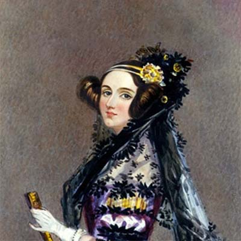

As maiores mulheres da Tecnologia
Quais nomes de mulheres na Tecnologia você sabe citar? Em todas as áreas da ciência, elas se destacam com contribuições de grande relevância para o desenvolvimento de inovações, programas, jogos e diversos outros feitos.
Ada Lovelace
Em meados do século XIX, a famosa condessa de Lovelace, chamada de Augusta Ada King, analisava e traduzia diversos materiais dos matemáticos contemporâneos.
Como resultado, isso ajudou para que o primeiro algoritmo do mundo fosse desenvolvido. No entanto, nessa época, Lovelace não tinha à sua disposição máquinas que fossem capazes de testar esses códigos e provar que a sua lógica estava correta.
Carol Shaw
Se você gosta de videogames, vai adorar conhecer a história de Carol Shaw. Nascida na região do Vale do Silício, no ano de 1955, ela é considerada a primeira mulher que começou a trabalhar com o desenvolvimento de jogos digitais.
Shaw criou softwares para games e consoles, sendo pioneira na geração procedural de conteúdo, que nada mais é que o aumento gradual da dificuldade nos níveis do jogo. Em várias de suas obras, uma fase era totalmente diferente da outra, conceito utilizado até hoje nos maiores títulos de jogos.
Grace Hopper
Você já parou para pensar de onde surgiu o termo “bug” para se referir a problemas nos sistemas computacionais? Ao que tudo indica, ele passou a ser usado depois que Grace Hopper solucionou um erro de processamento de dados ao retirar um inseto (chamado de “bug” na língua inglesa) de dentro de uma máquina.
Mas, claro, não foi apenas essa a sua contribuição. Hopper foi a primeira mulher a ter um PhD em Matemática na universidade de Yale. Trabalhou também na área da tecnologia dentro da Marinha dos Estados Unidos.
Roberta Willians
Essa mulher foi a cofundadora de uma das principais empresas da indústria dos games, a Sierra, que futuramente se fundiu com a Activision. Depois de ser apresentada ao jogo Adventure, que era feito por meio de texto, Roberta Williams teve a ideia de desenvolver jogos com conteúdos visuais, criando o Mistery House, uma de suas primeiras obras de maior relevância.
Essa sua ideia foi uma revolução no design de jogos, influenciando diversas criações. A empresa fundada junto ao seu marido, Ken Williams, foi responsável pela criação de diversos títulos conhecidos, como Phantasmagoria e King’s Quest.